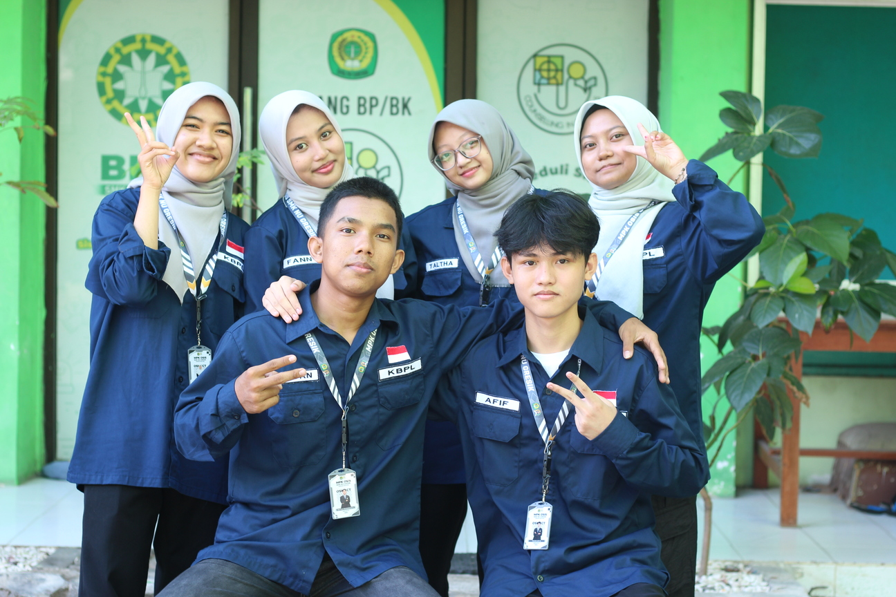
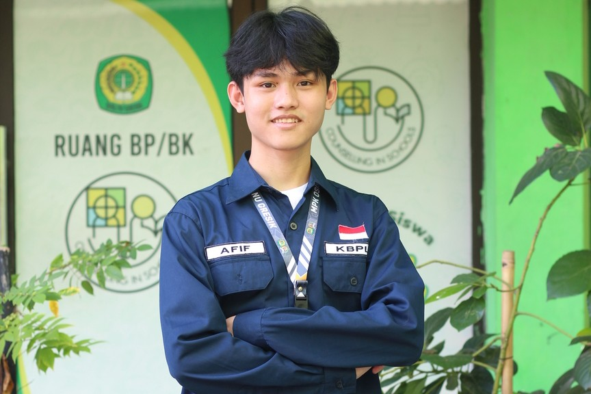
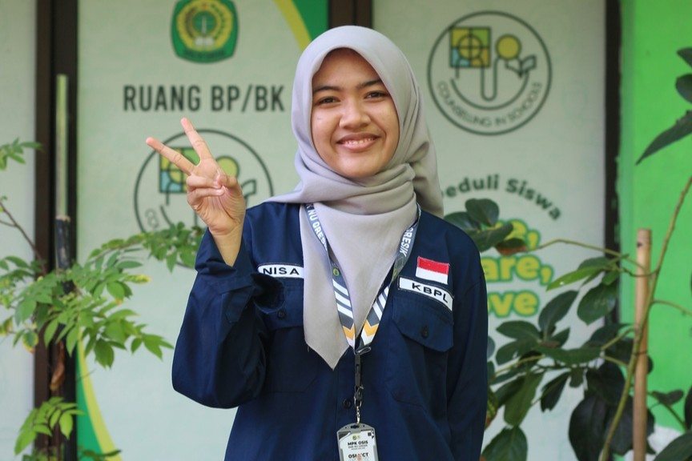
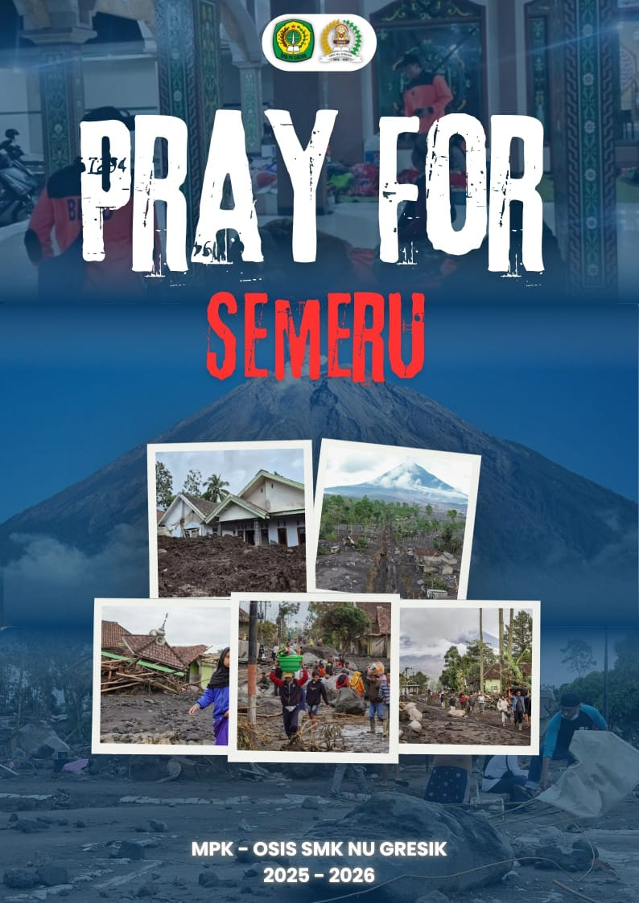
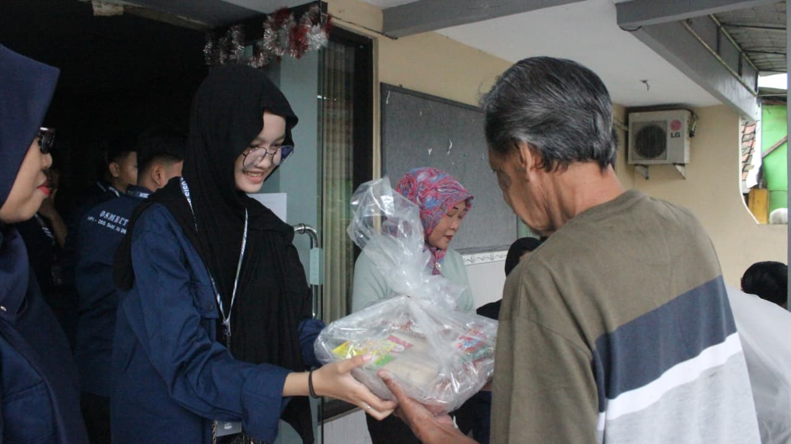
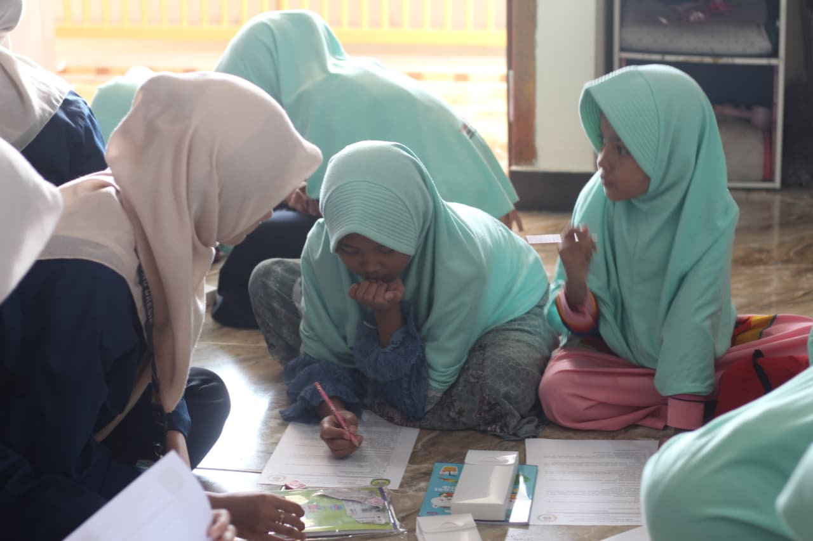

Slamet Budi Hariono, SE., M.Ak.
Pembina Sekbid KBPL







KBPL adalah salah satu seksi bidang di OSIS yang merupakan singkatan dari Kepribadian Berbudi Pekerti Luhur. Secara garis besar, sekbid ini bertanggung jawab atas pembentukan karakter, etika, moral, dan perilaku seluruh siswa di sekolah. Sekbid KBPL ini berfokus pada implementasi nilai-nilai moral tersebut dalam kehidupan sehari-hari dan hubungan antarmanusia.
Infaq adalah kegiatan pengumpulan infaq rutin yang dilaksanakan setiap hari jumat di setiap kelas. Sedangkan Takziyah adalah kegiatan silaturahmi dan pemberian doa kepada Bapak/Ibu murid-murid SMK NU Gresik maupun murid-murid SMK NU Gresik yang sedang berduka atau meninggal dunia.

Penggalangan Dana Bencana Alam adalah kegiatan yang dilakukan dengan memberikan bantuan kepada wilayah yang terkena bencana alam dari dana murid-murid dan donatur.

Jumat Berbagi adalah kegiatan berbagi kepada orang yang kurang mampu di jalanan yang dilakukan setiap 1 bulan 2x pada hari Jumat.

Bakti Sosial adalah kegiatan berbagi kepada orang yang kurang mampu di kecamatan Gresik khususnya lingkungan dekat sekolah dan bekerjasama dengan pihak kelurahan.

Calistung adalah salah satu program kerja yang bekerjasama dengan panti asuhan atau yayasan yang ada di Gresik untuk mengajarkan membaca, menulis, menghitung maupun mengaji kepada anak-anak panti asuhan atau yayasan.